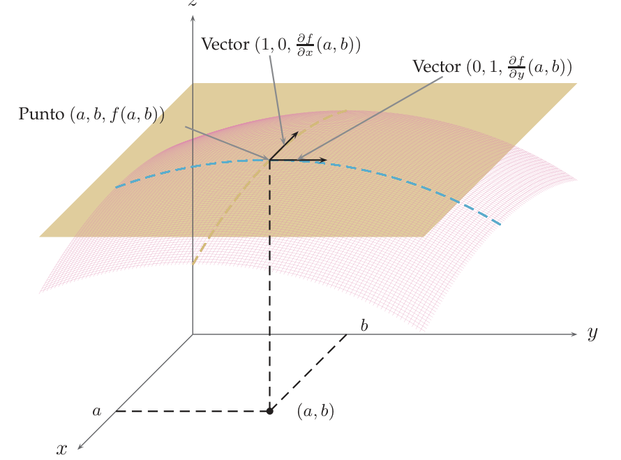

Diferencial de una función. Función diferenciable. Plano tangente
Qué significa que una función de varias variables «se parezca a un plano» cerca de un punto: la definición de diferenciabilidad, por qué no basta con tener derivadas parciales, cómo se comprueba en un punto problemático y cómo se calculan el plano tangente y la diferencial.
0Antes de empezar U pp.185-188
Mira un mapa de una zona de montaña con una lupa muy potente: cuanto más te acercas, más plana parece la superficie, hasta confundirse con un plano inclinado. Si eso ocurre, la función es diferenciable en el punto y ese plano es el plano tangente; la parte «lineal» de la función en ese punto es su diferencial. Las derivadas parciales solo miran dos direcciones (este y norte); la diferenciabilidad exige que el plano que forman encaje con la superficie en todas las direcciones. En una variable las dos ideas coinciden («derivable = tiene recta tangente»); en dos variables, no.
U pp.186-188Qué necesitas saber ya
- Derivadas parciales y gradiente (tema 4.3): $f_x$, $f_y$, $\nabla f(a,b)=(f_x(a,b),f_y(a,b))$, y calcularlas por definición en un punto especial (función a trozos).
- Límites en dos variables (tema 4.2): demostrar que un límite no existe con dos caminos (rectas $y=mx$), y polares: con $F(\rho,\theta)$, si el límite depende de $\theta$ no existe; si $|F-l|\le g(\rho)\to0$, el límite es $l$. También el emparedado y la continuidad.
- Plano en $\mathbb R^3$ y norma (tema 4.1): $\|(h,k)\|=\sqrt{h^2+k^2}$.
- L'Hôpital (Tema 2): solo para el Ej. 5.10.
Mapa del tema
| Apartado | Qué contiene | Dónde está |
|---|---|---|
| 1 Idea: el plano tangente | por qué las parciales no bastan; plano candidato (5.1) | U §5.1.1-5.1.2, pp.186-188 |
| 2 Función diferenciable | Def. 5.1, plano tangente (5.2), Ej. 5.1, cómo leer la definición | U pp.189-190 |
| 3 Qué implica y qué basta | Teorema 5.1, Ej. 5.2, condición suficiente, Ej. 5.3, esquema de implicaciones | U pp.190-192 |
| 4 Diferencial | $n$ variables, espacio tangente, Def. 5.3-5.4, Ej. 5.4 | U pp.190-193 |
| 5 Protocolo de 4 pasos | cómo estudiar la diferenciabilidad en un punto especial | síntesis |
| 6 Ejercicios de E | 5.1-5.12 (12 ejercicios) | E pp.168-179 |
| 7 Ejemplos propios | 4 ejemplos | propio |
| 8 Examen | 11 problemas de X | X |
| 9 Chuleta y comprobación | implicaciones, contraejemplos, errores, lista | síntesis |
Qué se pide en los ejercicios y en el examen
(A) Plano tangente y diferencial de una función «normal» en un punto (E 5.2-5.4; X, una pregunta corta casi cada convocatoria). (B) Estudiar la diferenciabilidad en el origen de una función definida a trozos: es el «Ejercicio 6» de muchos exámenes (E 5.5-5.7, 5.9-5.12; X 2010-2018). (C) Preguntas teóricas: qué implica qué, condición suficiente (E 5.1, 5.8; X p.60). Lo que sigue (regla de la cadena, reglas de la diferencial, función implícita…) es el resto del Tema 5.
1Idea: aproximar una superficie por un plano U pp.186-188
Con una variable, «$f$ es derivable en $a$» significa que cerca de $a$ la gráfica es casi la recta $y=f(a)+f'(a)(x-a)$, y además la derivabilidad ya garantiza la continuidad. Con dos variables, la gráfica es una superficie y su «recta tangente» debe ser un plano. Un plano queda fijado por un punto y dos direcciones. Las dos direcciones que ya conocemos son las de las derivadas parciales: moviéndonos solo en $x$ (con $y=b$) o solo en $y$ (con $x=a$) la gráfica tiene dos rectas tangentes, con vectores directores $\big(1,0,\frac{\partial f}{\partial x}(a,b)\big)$ y $\big(0,1,\frac{\partial f}{\partial y}(a,b)\big)$. El plano que contiene a esas dos rectas por $(a,b,f(a,b))$ es el candidato a plano tangente.
U pp.186-187
Si $f$ tiene parciales en $(a,b)$, el plano que pasa por $(a,b,f(a,b))$ y contiene a las dos rectas tangentes anteriores es $$z=f(a,b)+\nabla f(a,b)\cdot(x-a,\,y-b)=f(a,b)+\frac{\partial f}{\partial x}(a,b)(x-a)+\frac{\partial f}{\partial y}(a,b)(y-b).\tag{5.1}$$ Es la versión en dos variables de $y=f(a)+f'(a)(x-a)$.
U p.188Tener las parciales solo garantiza dos rectas tangentes. El plano (5.1) puede existir y, aun así, no «pegarse» a la superficie en las demás direcciones; hay funciones con las dos parciales y que ni siquiera son continuas (U Ej. 4.24, el de $\operatorname{arctg}\frac{xy}{x^2+y^2}$). Hace falta una definición que mire todas las direcciones a la vez: la diferenciabilidad.
U p.1882Función diferenciable y plano tangente U pp.189-190
Aproximamos $f$ cerca de $(a,b)$ por la altura del plano: $f(a+h,b+k)\approx f(a,b)+\nabla f(a,b)\cdot(h,k)$. El error es $E(h,k)=f(a+h,b+k)-f(a,b)-\nabla f(a,b)\cdot(h,k)$. Cualquier función continua tiene un error que tiende a $0$ al acercarse; eso no distingue nada. Lo que se pide a un plano tangente es más: que el error tienda a $0$ más deprisa que la distancia $\|(h,k)\|=\sqrt{h^2+k^2}$ al punto. Ejemplo numérico: si nos movemos $0{,}01$, el error debe ser mucho menor que $0{,}01$ (digamos $0{,}0001$); si nos movemos $0{,}001$, mucho menor que $0{,}001$. Eso es decir que el cociente $E/\|(h,k)\|$ tiende a $0$, y por cualquier camino de llegada.
PSea $f$ definida en un entorno de $(a,b)$ y con derivadas parciales en $(a,b)$. Se dice que $f$ es diferenciable en $(a,b)$ si $$\lim_{(h,k)\to(0,0)}\frac{f(a+h,b+k)-f(a,b)-\nabla f(a,b)\cdot(h,k)}{\|(h,k)\|}=0.$$ Entonces el plano tangente a la gráfica de $f$ en $(a,b,f(a,b))$ es $$z=f(a,b)+\nabla f(a,b)\cdot(x-a,\,y-b).\tag{5.2}$$
U p.189(i) Las parciales deben existir antes de empezar: el gradiente aparece dentro del límite. (ii) El gradiente que se resta es el único candidato posible: restando cualquier otro vector $(p,q)$, el límite no sería $0$ (si lo fuera, tomando $k=0$ saldría $\frac{f(a+h,b)-f(a,b)}{h}\to p$, es decir, $p=f_x(a,b)$; e igual $q=f_y(a,b)$). (iii) Es un límite doble en $(h,k)\to(0,0)$: se hace con polares o con caminos, como en el tema 4.2. (iv) «No diferenciable» significa que el límite no existe o no vale $0$; y entonces no hay plano tangente.
- Parciales en $(0,0)$ por definición: $\frac{f(h,0)-0}h=\frac{e^{-1/h^2}}h\to0$, y lo mismo en $y$: $\nabla f(0,0)=(0,0)$.
- Cociente con ese candidato: $Q(h,k)=\dfrac{f(h,k)}{\sqrt{h^2+k^2}}$. En polares ($h=\rho\cos\theta$, $k=\rho\operatorname{sen}\theta$): $Q=\dfrac{e^{-1/\rho^2}}{\rho}$, que no depende de $\theta$.
- $\lim_{\rho\to0}\frac{e^{-1/\rho^2}}{\rho}=0$ (la exponencial mata a cualquier potencia). Luego es diferenciable en $(0,0)$, con plano tangente $z=0$.
$\nabla f(1,2)=(2,1)$. Numerador: $(1+h)^2+(2+k)-3-2h-k=h^2$. Cociente: $Q=\frac{h^2}{\sqrt{h^2+k^2}}$, y como $h^2\le h^2+k^2$, $|Q|\le\sqrt{h^2+k^2}\to0$. Diferenciable, con plano $z=2x+y-1$ (compárese con el Ejemplo 5.4).
P3Qué implica y qué basta para ser diferenciable U pp.190-192
Si la superficie es casi un plano cerca del punto, entonces no puede tener saltos (es continua) ni «picos» a lo largo de los ejes (tiene parciales). Eso da dos filtros para descartar: continuidad y parciales. Pasarlos no basta. Y hay un atajo para afirmar: si las derivadas parciales son continuas, la función es «lisa» y seguro es diferenciable.
Si $f$ es diferenciable en un punto, entonces admite derivadas parciales en él y es continua en él.
Contrarrecíproco (lo que se usa en la práctica): si $f$ no es continua en el punto, o le falta alguna parcial, entonces no es diferenciable.
U p.191- $f(x,y)=xy+1$ si $x>0$, $f(x,y)=x-y$ si $x\le0$. Por el eje $x$ positivo tiende a $1$ y $f(0,0)=0$: es discontinua en $(0,0)$, luego no diferenciable.
- $g(x,y)=x+|y|$. Es continua, pero $\frac{g(0,h)-g(0,0)}h=\frac{|h|}h$ vale $1$ por la derecha y $-1$ por la izquierda: no existe $\frac{\partial g}{\partial y}(0,0)$, luego no diferenciable.
Si $f$ admite derivadas parciales en un entorno de $(a,b)$ y estas son continuas en $(a,b)$, entonces $f$ es diferenciable en $(a,b)$. (Una función continua y con derivadas parciales continuas se llama regular.) En la práctica: una función dada por una única fórmula elemental (polinomios, cocientes, exponenciales, senos, logaritmos…) es diferenciable en todo punto donde sus parciales, calculadas con las reglas habituales, existen y son continuas en un entorno. Cuidado con raíces, valores absolutos y puntos que anulan un denominador o donde la función se define aparte (E 5.6, E 5.12): ahí hay que ir a la definición.
U p.192El dominio es $\mathbb R^2\setminus\{(0,0)\}$. Allí las parciales son $f_x=-\frac{2x}{(x^2+y^2)^2}\cos\frac1{x^2+y^2}$ y $f_y=-\frac{2y}{(x^2+y^2)^2}\cos\frac1{x^2+y^2}$, continuas en todo el dominio. Por la condición suficiente, $f$ es diferenciable en todo su dominio.
U p.192$$\boxed{\text{parciales continuas en el punto}}\;\Longrightarrow\;\boxed{\text{diferenciable}}\;\Longrightarrow\;\boxed{\text{continua y con parciales}}$$ Ninguna flecha se invierte. La segunda no se invierte: $\operatorname{arctg}\frac{xy}{x^2+y^2}$ tiene parciales pero no es continua (U Ej. 4.24); y $\frac{xy}{\sqrt{x^2+y^2}}$ (Propio 2) es continua y tiene parciales y no es diferenciable. La primera no se invierte: E 5.5 es diferenciable con parciales discontinuas.
P(i) «Tiene parciales, luego es diferenciable» (falso). (ii) «Sus parciales no son continuas, luego no es diferenciable» (falso: la condición suficiente es solo suficiente; hay que ir a la definición). (iii) Aplicar la condición suficiente cuando la función tiene valores absolutos o raíces: las parciales pueden no existir en puntos próximos al punto (E 5.6).
4La diferencial, $n$ variables y espacio tangente U pp.190-193
Para $f:D\subset\mathbb R^n\to\mathbb R$ con parciales en $\bar a$: $f$ es diferenciable en $\bar a$ si $$\lim_{\bar h\to\bar 0}\frac{f(\bar a+\bar h)-f(\bar a)-\nabla f(\bar a)\cdot\bar h}{\|\bar h\|}=0,\qquad \bar h=(h_1,\dots,h_n).$$ Todo lo anterior (Teorema 5.1, condición suficiente) vale igual.
U p.190Con $n>2$ no se habla de «plano»: el espacio tangente a la gráfica de $f$ en $\big(\bar a,f(\bar a)\big)$ es el conjunto $x_{n+1}=f(\bar a)+\nabla f(\bar a)\cdot(\bar x-\bar a)$.
U pp.192-193El plano tangente tiene dos partes: la altura de partida $f(a,b)$ y un incremento lineal $\nabla f(a,b)\cdot(x-a,y-b)$ que dice cuánto sube o baja el plano al moverse desde el punto. Esa parte lineal, vista como máquina que recibe un vector $(x,y)$ y devuelve un número, es la diferencial. Es el análogo de «$dy=f'(a)\,dx$».
Si $f$ es diferenciable en $\bar a$, su diferencial en $\bar a$ es la aplicación lineal $Df(\bar a):\mathbb R^n\to\mathbb R$, $$Df(\bar a)(\bar x)=\nabla f(\bar a)\cdot\bar x$$ (su matriz es el gradiente). En dos variables: $Df(a,b)(x,y)=\frac{\partial f}{\partial x}(a,b)\,x+\frac{\partial f}{\partial y}(a,b)\,y$. Definición 5.4: $f$ es diferenciable en un conjunto $A$ si lo es en cada punto de $A$.
U p.193$\nabla f=(2x,1)$, $\nabla f(1,2)=(2,1)$, así que $Df(1,2)(x,y)=2x+y$. Plano tangente: $z=f(1,2)+Df(1,2)(x-1,y-2)=3+2(x-1)+(y-2)=2x+y-1$.
U p.193Confundir los dos papeles de las letras: $(a,b)$ es el punto donde se calcula el gradiente y $(x,y)$ es el vector sobre el que actúa la diferencial (o el punto genérico del plano tangente, donde se escribe $x-a$, $y-b$). Y no mezclar «diferencial $Df(a,b)$» (función lineal, pasa por el origen) con «plano tangente» (le suma $f(a,b)$ y desplaza $(x-a,y-b)$).
Por la Def. 5.1, $f(a+h,b+k)\approx f(a,b)+Df(a,b)(h,k)$ si $(h,k)$ es pequeño: es calcular la altura del plano tangente en vez de la de la superficie (Propio 1).
PSi $f$ es diferenciable en $(a,b)$, para todo vector unitario $\bar v$ se cumple $D_{\bar v}f(a,b)=Df(a,b)(\bar v)=\nabla f(a,b)\cdot\bar v$ (con parciales continuas lo da también U Teorema 4.2, p.180). Uso como filtro: si alguna derivada direccional no vale $\nabla f(a,b)\cdot\bar v$, la función no es diferenciable. Ejemplo: $f=\frac{x^3}{x^2+y^2}$, $f(0,0)=0$ (U Ej. 4.18): $\nabla f(0,0)=(1,0)$, pero con $\bar v=(\cos\alpha,\operatorname{sen}\alpha)$, $D_{\bar v}f(0,0)=\lim_{h\to0}\frac{h^3\cos^3\alpha}{h^2\cdot h}=\cos^3\alpha\ne\cos\alpha$ si $\operatorname{sen}\alpha\cos\alpha\ne0$: no diferenciable.
U pp.179-1865Protocolo para estudiar la diferenciabilidad P
Las parciales existen y son continuas: es diferenciable (condición suficiente). Entonces $Df(a,b)(x,y)=f_x(a,b)\,x+f_y(a,b)\,y$ y el plano es $z=f(a,b)+f_x(a,b)(x-a)+f_y(a,b)(y-b)$. Antes comprueba que el punto $(a,b,c)$ está en la gráfica: $c=f(a,b)$.
- ¿Es continua en el punto? Si no lo es, no es diferenciable (Teorema 5.1) y se acaba. (Un camino con límite distinto de $f(a,b)$ basta.)
- Parciales por definición (sobre los ejes). Si alguna no existe, no es diferenciable y se acaba.
- Cociente de diferenciabilidad con el candidato $\nabla f(a,b)$: $$Q(h,k)=\frac{f(a+h,b+k)-f(a,b)-f_x(a,b)\,h-f_y(a,b)\,k}{\sqrt{h^2+k^2}}.$$ Simplifica antes de nada.
- Límite de $Q$ en $(0,0)$ (polares o caminos): si es $0$, diferenciable; si no existe o no es $0$, no diferenciable. En polares: $Q=(\text{potencia de }\rho)\times(\text{función de }\theta)$. Exponente positivo y factor acotado: $0$, diferenciable. Exponente $0$ (solo función de $\theta$): si no es constante, el límite no existe; si es una constante distinta de $0$, el límite no es $0$; en ambos casos, no diferenciable. Exponente negativo: en cualquier dirección donde el factor de $\theta$ no se anule, $Q\to\pm\infty$; no diferenciable.
Alternativa a 3-4: si las parciales existen cerca y son continuas en el punto, diferenciable. Si no lo son, no se concluye nada: ve a la definición.
Usar $\nabla f(a,b)=(0,0)$ «porque $f(a,b)=0$» (hay que calcularlo); olvidar restar el término $-f_x h-f_y k$ en el numerador; llamar «diferenciable» a una función solo porque $Q$ tiende a $0$ por rectas (hay que probarlo por todos los caminos: polares con cota); concluir «no diferenciable» cuando $Q\to0$.
6Ejercicios del libro, resueltos E pp.168-179
Están en el orden del libro. Orden recomendado para aprender: 5.1 → 5.8 (qué implica qué) → 5.2 → 5.3 → 5.4 (plano tangente y diferencial) → 5.12 (falta una parcial) → 5.9 → 5.7 (hay parciales, pero $Q\not\to0$) → 5.11 → 5.6 (diferenciable por la definición) → 5.5 (diferenciable con parciales discontinuas) → 5.10 (con L'Hôpital).
Ejercicio 5.1 · ¿parciales implican diferenciable y plano tangente? E p.168
Si una función $f:\mathbb R^2\to\mathbb R$ tiene derivadas parciales en un punto $(a,b)\in\mathbb R^2$, entonces ¿es diferenciable en ese punto y tiene plano tangente en $(a,b,f(a,b))$?
- Qué me piden
- Decidir si «tener derivadas parciales en un punto» garantiza que $f$ sea diferenciable allí y tenga plano tangente. Respuesta: sí o no, con justificación.
- Cómo lo pienso
- Las parciales solo miran a lo largo de los dos ejes; el plano tangente tiene que pegarse a la gráfica en todas las direcciones. Si algo falla fuera de los ejes, el plano no existe. Para refutar una afirmación basta un contraejemplo.
- Qué uso
- Def. 5.1 de diferenciable (U p.189); Teorema 5.1 (U p.191): diferenciable $\Rightarrow$ continua; contraejemplo $\operatorname{arctg}\frac{xy}{x^2+y^2}$ (U Ej. 4.24, p.172).
- Por dónde empiezo
- Busco una función con parciales en el origen pero discontinua allí; por el Teorema 5.1 no será diferenciable.
- Qué dan las parciales (U pp.186-188): los vectores $(1,0,f_x)$ y $(0,1,f_y)$. Solo miran dos direcciones.
- Qué exige la diferenciabilidad (Def. 5.1, U p.189): que el plano formado con esas parciales aproxime a $f$ por cualquier camino.
- Contraejemplo (U Ej. 4.24, p.172): $f=\operatorname{arctg}\frac{xy}{x^2+y^2}$, $f(0,0)=0$. En los ejes $f=0$, así que $f_x(0,0)=f_y(0,0)=0$. Pero por $y=x$, $f(x,x)=\operatorname{arctg}\frac12\ne0=f(0,0)$: no es continua en $(0,0)$ y, por el Teorema 5.1, no es diferenciable.
- Plano tangente: (5.2) solo se llama plano tangente cuando $f$ es diferenciable; sin ella no lo hay.
Respuesta: no se puede asegurar ninguna de las dos cosas. Las parciales son condición necesaria pero no suficiente. Lo que sí basta: parciales cerca del punto y continuas en él (U p.192).
Trasladar «derivable = tiene recta tangente» de una variable a dos cambiando «derivable» por «tiene parciales».
Ejercicio 5.2 · plano tangente de $\cos y-yx^2$ en $(0,0,1)$ E p.168
Sea $f(x,y)=\cos y-yx^2$. Decide cuáles de las siguientes condiciones cumple el plano tangente a su gráfica en $(0,0,1)$: a) Verifica la ecuación $1-z=0$. b) Es paralelo al plano $xy$. c) Es paralelo al plano $xz$. d) Ninguna de las anteriores.
- Qué me piden
- Calcular el plano tangente a $z=\cos y-yx^2$ en $(0,0,1)$ y decidir cuál de las descripciones a)-d) cumple.
- Cómo lo pienso
- Plano tangente = la altura de partida más lo que sube o baja según el gradiente. Si el gradiente es cero, el plano no se inclina: es horizontal.
- Qué uso
- Plano tangente (5.2), U p.189; condición suficiente de diferenciabilidad (parciales continuas), U p.192.
- Por dónde empiezo
- Compruebo $f(0,0)=1$ y calculo $\nabla f(0,0)$.
- ¿El punto está en la gráfica? $f(0,0)=\cos0-0=1$. Sí.
- ¿Diferenciable? Fórmula elemental: parciales continuas en $\mathbb R^2$ (U p.192). Hay plano tangente.
- Parciales: $f_x=-2xy$ ($\cos y$ no depende de $x$); $f_y=-\operatorname{sen}y-x^2$. En $(0,0)$: $\nabla f(0,0)=(0,0)$.
- Plano (5.2): $z=1+(0,0)\cdot(x,y)=1$, es decir, $1-z=0$.
- Interpretar: $z=1$ es un plano horizontal: paralelo al plano $xy$ ($z=0$). No lo es al plano $xz$ (que es $y=0$, vertical).
Respuesta: a) y b).
Confundir «paralelo al plano $xy$» (horizontal, $z=$ cte) con «paralelo al plano $xz$» (vertical, $y=$ cte).
Ejercicio 5.3 · plano tangente de $x^2+y^3+e^{x+y}$ en $(1,-1,1)$ E p.169
Sea $f(x,y)=x^2+y^3+e^{x+y}$. Obtén la ecuación del plano tangente a su gráfica en el punto $(1,-1,1)$.
- Qué me piden
- Obtener la ecuación del plano tangente a $z=x^2+y^3+e^{x+y}$ en $(1,-1,1)$.
- Cómo lo pienso
- Sustituyo la superficie curva por el plano que mejor la imita en ese punto: misma altura y misma inclinación (el gradiente) en las dos direcciones.
- Qué uso
- Plano tangente (5.2), U p.189; parciales continuas $\Rightarrow$ diferenciable (U p.192).
- Por dónde empiezo
- Compruebo que $(1,-1,1)$ está en la gráfica y calculo $f_x$ y $f_y$.
- Diferenciable: polinomio más exponencial, parciales continuas en $\mathbb R^2$.
- Punto en la gráfica: $f(1,-1)=1-1+e^0=1$. Correcto.
- Parciales (en $e^{x+y}$ la derivada interior respecto de $x$ o de $y$ es $1$): $f_x=2x+e^{x+y}$, $f_y=3y^2+e^{x+y}$.
- En $(1,-1)$: $f_x=2+1=3$, $f_y=3+1=4$.
- Plano: $z=1+3(x-1)+4(y+1)=\boxed{z=2+3x+4y}$.
- Comprobación: en $(1,-1)$: $2+3-4=1=f(1,-1)$.
Escribir $(y-1)$ en lugar de $(y-(-1))=(y+1)$.
Ejercicio 5.4 · diferencial de $xe^y+y\cos^2(xy)$ E p.170
Sea $f(x,y)=xe^y+y\cos^2(xy)$. ¿Cuál es su diferencial en un punto genérico $(a,b)$?
- Qué me piden
- Escribir la diferencial de $f(x,y)=xe^y+y\cos^2(xy)$ en un punto genérico $(a,b)$, como función lineal de $(x,y)$.
- Cómo lo pienso
- La diferencial es la «parte lineal» de $f$ en $(a,b)$: una máquina que recibe un vector $(x,y)$ y devuelve gradiente por vector.
- Qué uso
- Def. 5.3 de diferencial (U p.193); parciales continuas $\Rightarrow$ diferenciable (U p.192); regla del producto y de la cadena.
- Por dónde empiezo
- Calculo $f_x$ y $f_y$ con cuidado (producto y derivada interior) y las evalúo en $(a,b)$.
- Diferenciable en $\mathbb R^2$: sumas, productos y composiciones elementales; parciales continuas.
- Parcial en $x$ ($y$ constante): $\frac{\partial}{\partial x}(xe^y)=e^y$. En $y\cos^2(xy)$, con $u=xy$ y $u_x=y$: $y\cdot2\cos u\,(-\operatorname{sen}u)\,y=-y^2\operatorname{sen}(2xy)$. Total: $f_x=e^y-y^2\operatorname{sen}(2xy)$.
- Parcial en $y$ ($x$ constante): $xe^y$ más, por la regla del producto, $1\cdot\cos^2(xy)+y\cdot(-2\cos(xy)\operatorname{sen}(xy)\,x)=\cos^2(xy)-xy\operatorname{sen}(2xy)$. Total: $f_y=xe^y+\cos^2(xy)-xy\operatorname{sen}(2xy)$.
- Diferencial (Def. 5.3, U p.193): $$Df(a,b)(x,y)=\big(e^b-b^2\operatorname{sen}(2ab)\big)\,x+\big(ae^b+\cos^2(ab)-ab\operatorname{sen}(2ab)\big)\,y.$$
Olvidar la regla del producto en $\frac{\partial}{\partial y}\big(y\cos^2(xy)\big)$ (falta el término $\cos^2(xy)$), o mezclar el punto $(a,b)$ con la variable $(x,y)$.
Ejercicio 5.5 · diferenciable con parciales discontinuas: $(x^2+y^2)\operatorname{sen}\frac1{x^2+y^2}$ E pp.170-172
Sea $f(x,y)=(x^2+y^2)\operatorname{sen}\dfrac1{x^2+y^2}$ si $(x,y)\ne(0,0)$, $f(0,0)=0$. ¿Tiene derivadas parciales en $(0,0)$? ¿Es diferenciable en $(0,0)$? ¿Son las derivadas parciales continuas en $(0,0)$?
- Qué me piden
- Estudiar en el origen las parciales, la diferenciabilidad y la continuidad de las parciales de $(x^2+y^2)\operatorname{sen}\frac1{x^2+y^2}$.
- Cómo lo pienso
- Cerca del origen $f$ es diminuta (el factor $x^2+y^2$ la aplasta) y por eso es diferenciable, pero su pendiente oscila sin control: las parciales no se estabilizan.
- Qué uso
- Def. 5.1 (U p.189); condición suficiente (U p.192), que es solo suficiente; criterio de polares (U p.165).
- Por dónde empiezo
- Parciales en $(0,0)$ por definición, y luego el cociente $Q$ en polares.
- Parcial en $x$ en el origen: $\frac{f(h,0)-0}h=h\operatorname{sen}\frac1{h^2}$ y $|h\operatorname{sen}\frac1{h^2}|\le|h|\to0$: $f_x(0,0)=0$. Por simetría, $f_y(0,0)=0$.
- Cociente: $Q=\dfrac{(h^2+k^2)\operatorname{sen}\frac1{h^2+k^2}}{\sqrt{h^2+k^2}}$. En polares, $Q=\rho\operatorname{sen}\frac1{\rho^2}$, con $|Q|\le\rho\to0$.
- Diferenciable en $(0,0)$ (Def. 5.1), con $Df(0,0)=0$.
- Parcial fuera del origen (producto y cadena; $\frac\partial{\partial x}\frac1{x^2+y^2}=\frac{-2x}{(x^2+y^2)^2}$): $$f_x=2x\operatorname{sen}\frac1{x^2+y^2}-\frac{2x}{x^2+y^2}\cos\frac1{x^2+y^2}.$$
- ¿Continua en $(0,0)$? Tendría que tender a $0$. Por el eje $x$ con $x_n=\frac1{\sqrt{2n\pi}}\to0$: $\frac1{x_n^2}=2n\pi$, $\operatorname{sen}=0$, $\cos=1$, y $f_x(x_n,0)=-\frac2{x_n}=-2\sqrt{2n\pi}\to-\infty$.
- Conclusión: $f_x$ no es continua en $(0,0)$; por simetría, tampoco $f_y$.
Resumen: sí tiene parciales ($0$ y $0$); sí es diferenciable; las parciales no son continuas en $(0,0)$.
«Las parciales no son continuas, luego no es diferenciable»: la condición suficiente es solo suficiente; si falla, a la definición.
Ejercicio 5.6 · diferenciabilidad de $x|y|$ en $(0,0)$ E pp.172-173
Estudia la diferenciabilidad en $(0,0)$ de $f(x,y)=x|y|$.
- Qué me piden
- Decidir si $f(x,y)=x|y|$ es diferenciable en $(0,0)$.
- Cómo lo pienso
- El valor absoluto hace un «pico» en $y=0$, pero el factor $x$ lo aplasta cerca del origen; hay que comprobar si basta.
- Qué uso
- Def. 5.1 (U p.189); criterio de polares (U p.165): si $Q=\rho\cdot(\text{acotado})$ tiende a $0$.
- Por dónde empiezo
- Veo que $f$ es continua y calculo las parciales en el origen por definición.
- Continua: producto de continuas.
- Parciales: $f(h,0)=0$ y $f(0,h)=0$: $\nabla f(0,0)=(0,0)$.
- Cociente: $Q=\dfrac{h|k|}{\sqrt{h^2+k^2}}$. En polares, $Q=\rho\cos\theta|\operatorname{sen}\theta|$, y $|Q|\le\rho\to0$ (caso 2 del criterio).
- Conclusión: $f$ es diferenciable en $(0,0)$, con $Df(0,0)=0$.
- ¿Servía la condición suficiente? No: $\frac{\partial f}{\partial y}$ no existe en $(x_0,0)$ con $x_0\ne0$ (el cociente $x_0\frac{|k|}k$ vale $x_0$ y $-x_0$ por cada lado). Hay puntos tan cerca del origen como se quiera sin esa parcial, así que no se cumple «parciales cerca del punto».
Aplicar la condición suficiente con «$f_y=x$ si $y\ge0$, $-x$ si $y<0$»: esa fórmula falla sobre la recta $y=0$.
Ejercicio 5.7 · $\frac{4x^3}{x^2+y^2}$: continua, con parciales, no diferenciable E pp.173-174
Sea $f(x,y)=\dfrac{4x^3}{x^2+y^2}$ si $(x,y)\ne(0,0)$, $f(0,0)=0$. Estudia su continuidad, si tiene derivadas parciales y si es diferenciable.
- Qué me piden
- Estudiar continuidad, parciales y diferenciabilidad en el origen de $\frac{4x^3}{x^2+y^2}$ ($f(0,0)=0$).
- Cómo lo pienso
- Lo paso por tres filtros en orden: ¿continua?, ¿parciales?, ¿el error es «más pequeño que la distancia»? Aquí pasa los dos primeros y falla el tercero.
- Qué uso
- Def. 5.1 (U p.189); criterio de polares (U p.165).
- Por dónde empiezo
- Acoto $|f|$ para la continuidad y calculo $f_x(0,0)$ y $f_y(0,0)$ por definición.
- Fuera del origen: cociente de polinomios con denominador no nulo: diferenciable (condición suficiente).
- Continuidad en el origen: como $x^2\le x^2+y^2$, $|f|=\frac{4x^2|x|}{x^2+y^2}\le4|x|\to0$. Continua. (En polares, $f=4\rho\cos^3\theta$.)
- Parciales por definición: $f(h,0)=4h$, cociente $4$: $f_x(0,0)=4$. $f(0,h)=0$: $f_y(0,0)=0$. Candidato: $\nabla f(0,0)=(4,0)$.
- Cociente: $Q=\dfrac{\frac{4h^3}{h^2+k^2}-4h}{\sqrt{h^2+k^2}}=\dfrac{-4hk^2}{(h^2+k^2)^{3/2}}$.
- Polares: $Q=-4\cos\theta\operatorname{sen}^2\theta$: no queda $\rho$ y depende de $\theta$.
- Ejemplo concreto: por $\theta=0$ (eje $x$) da $0$; por $\theta=\frac\pi4$ (recta $k=h$, $h>0$) da $-4\cdot\frac{\sqrt2}2\cdot\frac12=-\sqrt2$. Distintos.
- Conclusión (criterio de polares, caso 1): el límite de $Q$ no existe; no es diferenciable en $(0,0)$.
Olvidar restar el término del gradiente ($-4h$) o usar $\nabla f(0,0)=(0,0)$ «porque $f(0,0)=0$».
Muy parecidos: $\frac{x^3}{x^2+2y^2}$ (X pp.2-3 y 90-92), con $\nabla f(0,0)=(1,0)$ y $Q=\frac{-2\cos\theta\operatorname{sen}^2\theta}{1+\operatorname{sen}^2\theta}$: no diferenciable.
Ejercicio 5.8 · continuidad y diferenciabilidad en dos puntos de $\mathbb R^3$ E pp.174-175
De $f:\mathbb R^3\to\mathbb R$ se sabe que es discontinua en $(1,2,3)$ y diferenciable en $(3,2,1)$. ¿Puedes decir algo sobre su diferenciabilidad en $(1,2,3)$? ¿Y sobre su continuidad en $(3,2,1)$?
- Qué me piden
- Con $f:\mathbb R^3\to\mathbb R$ discontinua en $(1,2,3)$ y diferenciable en $(3,2,1)$, decir qué se sabe de su diferenciabilidad en el primero y de su continuidad en el segundo.
- Cómo lo pienso
- No hay cuentas: solo la relación lógica entre «diferenciable» y «continua». Si fuera diferenciable tendría que ser continua.
- Qué uso
- Teorema 5.1 (U p.191), válido en $n$ variables por la Def. 5.2 (U p.190), y su contrarrecíproco.
- Por dónde empiezo
- Escribo «diferenciable $\Rightarrow$ continua» y lo aplico a cada punto.
- Teorema 5.1 (U p.191; vale con $n$ variables por la Def. 5.2): diferenciable en un punto $\Rightarrow$ continua en él.
- En $(3,2,1)$: es diferenciable, luego es continua.
- En $(1,2,3)$: si fuera diferenciable, sería continua; pero es discontinua. Imposible: no es diferenciable.
Respuesta: no diferenciable en $(1,2,3)$; continua en $(3,2,1)$.
Razonar al revés: «es continua, luego diferenciable» (falso: $x+|y|$, U Ej. 5.2).
Ejercicio 5.9 · $y\operatorname{sen}\frac1x+x$: continua, con parciales, sin plano tangente E pp.175-176
Sea $f(x,y)=y\operatorname{sen}\frac1x+x$ si $x\ne0$, $f(x,y)=0$ si $x=0$. Estudia la continuidad, la existencia de derivadas parciales en $(0,0)$ y, si es posible, calcula el plano tangente a la gráfica en $(0,0,0)$.
- Qué me piden
- Estudiar la continuidad y las parciales en $(0,0)$ de $y\operatorname{sen}\frac1x+x$ y, si se puede, su plano tangente en $(0,0,0)$.
- Cómo lo pienso
- Si hubiera plano tangente sería el candidato que dan las parciales; hay que ver si el error se hace pequeño. El seno oscila sin parar y lo impide.
- Qué uso
- Def. 5.1 y plano tangente (5.2), U p.189; emparedado para la continuidad.
- Por dónde empiezo
- Acoto $|f|\le|x|+|y|$ para la continuidad y calculo $f_x(0,0)$, $f_y(0,0)$.
- Continuidad (emparedado): si $x\ne0$, $|f|\le|y|\,|\operatorname{sen}\frac1x|+|x|\le|y|+|x|$; si $x=0$, $|f|=0\le|x|+|y|$. Como $|x|+|y|\to0$: $\lim_{(x,y)\to(0,0)}f=0=f(0,0)$. Continua.
- Parcial en $x$: $f(h,0)=h$, cociente $1$: $f_x(0,0)=1$.
- Parcial en $y$: $f(0,h)=0$: $f_y(0,0)=0$. Candidato: $\nabla f(0,0)=(1,0)$, plano candidato $z=x$.
- Cociente: $Q=\dfrac{f(h,k)-0-h}{\sqrt{h^2+k^2}}=\dfrac{k\operatorname{sen}(1/h)}{\sqrt{h^2+k^2}}$ si $h\ne0$.
- Un camino concreto: la recta $k=h=t>0$: $Q(t,t)=\frac{t\operatorname{sen}(1/t)}{\sqrt2\,t}=\frac1{\sqrt2}\operatorname{sen}\frac1t$.
- Ese límite no existe: con $t_n=\frac1{n\pi}$, $\operatorname{sen}(1/t_n)=0$; con $t_n=\frac1{\pi/2+2n\pi}$, vale $1$. Dos sucesiones hacia $0$ dan valores $0$ y $\frac1{\sqrt2}$.
- Conclusión: si existiera el límite doble de $Q$, existiría por esa recta. Luego $f$ no es diferenciable en $(0,0)$ y no tiene plano tangente.
Concluir «existe el plano tangente $z=x$» solo porque existen las parciales.
Ejercicio 5.10 · $\frac{x^2+y^2}{\ln(1-x^2-y^2)}$ con $f(0,0)=-1$ E pp.176-177
Sea $f(x,y)=\dfrac{x^2+y^2}{\ln(1-x^2-y^2)}$ si $(x,y)\in S\setminus\{(0,0)\}$, $f(0,0)=-1$, con $S=\{x^2+y^2<1\}$. Estudia si es continua y si es diferenciable en $(0,0)$.
- Qué me piden
- Estudiar la continuidad y la diferenciabilidad en $(0,0)$ de $\frac{x^2+y^2}{\ln(1-x^2-y^2)}$ con $f(0,0)=-1$.
- Cómo lo pienso
- La función solo depende de $u=x^2+y^2$, la distancia al origen al cuadrado: el problema de dos variables se convierte en límites de una variable.
- Qué uso
- Def. 5.1 (U p.189); regla de L'Hôpital (U §2.3.2, p.82).
- Por dónde empiezo
- Escribo $f=\varphi(u)$ con $u=x^2+y^2$ y calculo $\lim_{u\to0^+}\varphi(u)$.
- Reducir: con $u=x^2+y^2=\rho^2$, $f=\varphi(u)=\frac u{\ln(1-u)}$ para $0<u<1$.
- Continuidad: $\lim_{u\to0^+}\frac u{\ln(1-u)}$ es $\frac00$; L'Hôpital: $\frac1{-1/(1-u)}=-(1-u)\to-1$. Como $u=\rho^2\to0$ y no interviene $\theta$, $\lim_{(x,y)\to(0,0)}f=-1=f(0,0)$: continua.
- Preparar el límite clave. $G(u)=\varphi(u)+1=\frac{u+\ln(1-u)}{\ln(1-u)}$ (es $f-f(0,0)$). Queremos $\lim_{u\to0^+}\frac{G(u)}u$; escribimos $\frac{G(u)}u=\dfrac{\frac{u+\ln(1-u)}{u^2}}{\frac{\ln(1-u)}u}$.
- Numerador ($\frac00$, L'Hôpital): $\frac{1-\frac1{1-u}}{2u}=\frac{-1}{2(1-u)}\to-\frac12$.
- Denominador ($\frac00$, L'Hôpital): $\frac{-1/(1-u)}1\to-1$.
- Cociente: $\frac{G(u)}u\to\frac{-1/2}{-1}=\frac12$.
- Parcial en $x$: $\frac{f(h,0)-f(0,0)}h=\frac{G(h^2)}h=h\cdot\frac{G(h^2)}{h^2}\to0\cdot\frac12=0$. Igual en $y$ por simetría: $\nabla f(0,0)=(0,0)$.
- Cociente de diferenciabilidad: $Q=\frac{f(h,k)+1}{\rho}=\frac{G(\rho^2)}\rho=\rho\cdot\frac{G(\rho^2)}{\rho^2}\to0\cdot\frac12=0$, sin dependencia de $\theta$: el límite doble es $0$.
Conclusión: $f$ es continua y diferenciable en $(0,0)$, con $Df(0,0)=0$ y plano tangente $z=-1$.
Restar $f(0,0)$ con el signo cambiado: aquí $f(0,0)=-1$, así que en el numerador aparece $+1$.
Ejercicio 5.11 · $\frac{xy}{\sqrt[4]{x^2+y^2}}$ E p.178
Sea $f(x,y)=\dfrac{xy}{\sqrt[4]{x^2+y^2}}$ si $(x,y)\ne(0,0)$, $f(0,0)=0$. Calcula las derivadas parciales en $(0,0)$ y estudia la diferenciabilidad de $f$ en ese punto.
- Qué me piden
- Calcular las parciales en el origen de $\frac{xy}{\sqrt[4]{x^2+y^2}}$ y decidir si es diferenciable allí.
- Cómo lo pienso
- Comparo «grados»: el numerador se hace pequeño como $\rho^2$ y el denominador como $\rho^{1/2}$; al dividir además por $\rho$ sobra una potencia positiva de $\rho$.
- Qué uso
- Def. 5.1 (U p.189); criterio de polares (U p.165), caso en que $Q=\text{potencia de }\rho\times\text{acotado}$.
- Por dónde empiezo
- Parciales por definición (en los ejes $xy=0$) y paso $Q$ a polares.
- Parciales: en los ejes $xy=0$, así que $f(h,0)=f(0,h)=0$: $\nabla f(0,0)=(0,0)$.
- Cociente: $Q=\dfrac{hk}{\sqrt[4]{h^2+k^2}\,\sqrt{h^2+k^2}}$.
- Polares: $\sqrt[4]{\rho^2}=\sqrt\rho$ y $\sqrt{\rho^2}=\rho$: $Q=\dfrac{\rho^2\cos\theta\operatorname{sen}\theta}{\sqrt\rho\,\rho}=\sqrt\rho\cos\theta\operatorname{sen}\theta$.
- Acotar (caso 2): $|Q|\le\sqrt\rho\to0$.
Conclusión: diferenciable en $(0,0)$, con $Df(0,0)=0$ y plano tangente $z=0$.
Concluir solo con $\rho\to0$ sin decir que el factor en $\theta$ está acotado (es lo que permite aplicar el caso 2).
Ejercicio 5.12 · $g=\frac{f+xy}{\sqrt{x^2+y^2}}$ con $f=x^2-xy+y^2$ E p.179
Sea $f(x,y)=x^2-xy+y^2$ y $g(x,y)=\dfrac{f(x,y)+xy}{\sqrt{x^2+y^2}}$ si $(x,y)\ne(0,0)$, $g(0,0)=0$. ¿Es $g$ diferenciable en todo $\mathbb R^2$?
- Qué me piden
- Decidir si $g=\frac{f+xy}{\sqrt{x^2+y^2}}$, con $f=x^2-xy+y^2$ y $g(0,0)=0$, es diferenciable en todo $\mathbb R^2$.
- Cómo lo pienso
- Antes de derivar simplifico: queda la distancia al origen, un cono con pico en el origen, donde no hay plano tangente.
- Qué uso
- Teorema 5.1 (U p.191): diferenciable $\Rightarrow$ existen las parciales; derivadas parciales por definición (U Def. 4.8, p.169).
- Por dónde empiezo
- Simplifico $f+xy=x^2+y^2$ y estudio $\frac{g(h,0)-g(0,0)}h$.
- Simplificar: $f+xy=x^2+y^2$, luego $g=\sqrt{x^2+y^2}$ fuera del origen; y como $g(0,0)=0=\sqrt0$, $g=\sqrt{x^2+y^2}$ en todo $\mathbb R^2$.
- Fuera del origen: $g_x=\frac x{\sqrt{x^2+y^2}}$, $g_y=\frac y{\sqrt{x^2+y^2}}$, continuas: $g$ es diferenciable en $\mathbb R^2\setminus\{(0,0)\}$.
- En el origen, parcial por definición: $\frac{g(h,0)-g(0,0)}h=\frac{\sqrt{h^2}}h=\frac{|h|}h$ (ojo: $\sqrt{h^2}=|h|$, no $h$).
- Ese límite no existe: vale $1$ por la derecha y $-1$ por la izquierda: no existe $\frac{\partial g}{\partial x}(0,0)$.
- Teorema 5.1: sin una parcial no hay diferenciabilidad.
Respuesta: no. $g$ es diferenciable en $\mathbb R^2\setminus\{(0,0)\}$ pero no en $(0,0)$ (aunque sí es continua allí).
Escribir $\sqrt{h^2}=h$ y obtener $\frac{\partial g}{\partial x}(0,0)=1$.
7Ejemplos propios, de menos a más difícil P
Propio 1 · aproximar con la diferencial P
Usa la diferencial para estimar $\sqrt{3{,}02^2+3{,}97^2}$ sin calculadora.
- Qué me piden
- Estimar $\sqrt{3{,}02^2+3{,}97^2}$ sin calculadora.
- Cómo lo pienso
- Cerca de $(3,4)$ la función $\sqrt{x^2+y^2}$ se confunde con su plano tangente; en $(3,4)$ todo sale exacto ($=5$).
- Qué uso
- Def. 5.1 (U p.189): $f(a+h,b+k)\approx f(a,b)+\nabla f(a,b)\cdot(h,k)$.
- Por dónde empiezo
- Elijo $f=\sqrt{x^2+y^2}$, el punto $(3,4)$ y los incrementos $h,k$.
- Función y punto cómodo: $f=\sqrt{x^2+y^2}$ cerca de $(3,4)$, donde $f(3,4)=5$.
- Diferenciable allí: $f_x=\frac x{\sqrt{x^2+y^2}}$, $f_y=\frac y{\sqrt{x^2+y^2}}$, continuas fuera del origen. $\nabla f(3,4)=\big(\frac35,\frac45\big)$.
- Incrementos: $h=0{,}02$, $k=-0{,}03$.
- Aproximación: $f(3{,}02;3{,}97)\approx5+\frac35(0{,}02)+\frac45(-0{,}03)=5+0{,}012-0{,}024=4{,}988$.
- Comprobación: el valor exacto es $4{,}98812\ldots$: error del orden de $10^{-4}$, mucho menor que $\|(h,k)\|\approx0{,}036$, como dice la Def. 5.1.
Propio 2 · continua, con parciales, no diferenciable P
Sea $f(x,y)=\dfrac{xy}{\sqrt{x^2+y^2}}$ si $(x,y)\ne(0,0)$, $f(0,0)=0$. Estudia continuidad, parciales y diferenciabilidad en $(0,0)$.
- Qué me piden
- Estudiar continuidad, parciales y diferenciabilidad en $(0,0)$ de $\frac{xy}{\sqrt{x^2+y^2}}$.
- Cómo lo pienso
- Ejemplo para recordar que continua y con parciales no basta: el cociente $Q$ ni siquiera tiende a $0$.
- Qué uso
- Def. 5.1 (U p.189); Teorema 5.1 (U p.191); criterio de polares (U p.165).
- Por dónde empiezo
- Paso a polares para la continuidad y calculo las parciales en los ejes.
- Continua: en polares $f=\rho\cos\theta\operatorname{sen}\theta$, $|f|\le\rho\to0$.
- Parciales: en los ejes $f=0$: $\nabla f(0,0)=(0,0)$.
- Cociente: $Q=\frac{hk}{h^2+k^2}=\cos\theta\operatorname{sen}\theta=\frac12\operatorname{sen}2\theta$.
- Depende de $\theta$: $0$ por el eje $x$, $\frac12$ por $k=h$. No existe el límite: no diferenciable.
- Moraleja: pasa los dos filtros del Teorema 5.1 y aun así no es diferenciable. Comparado con E 5.11 ($\sqrt[4]{\ }$ en vez de $\sqrt{\ }$): allí sobraba $\sqrt\rho$; aquí no sobra nada.
Propio 3 · diferenciable con una parcial discontinua P
Sea $f(x,y)=x^2\operatorname{sen}\frac1x+y^2$ si $x\ne0$, $f(0,y)=y^2$. Prueba que $f$ es diferenciable en $(0,0)$ pero $\frac{\partial f}{\partial x}$ no es continua en $(0,0)$.
- Qué me piden
- Probar que $f$ es diferenciable en $(0,0)$ pero que $\frac{\partial f}{\partial x}$ no es continua allí.
- Cómo lo pienso
- Es la versión sencilla de E 5.5: $f$ es diferenciable porque $x^2\operatorname{sen}\frac1x$ es muy pequeña, pero su derivada oscila.
- Qué uso
- Def. 5.1 (U p.189); condición suficiente, que no es necesaria (U p.192).
- Por dónde empiezo
- Parciales en el origen por definición y acoto el cociente $Q$.
- Parciales: $\frac{f(h,0)}h=h\operatorname{sen}\frac1h\to0$: $f_x(0,0)=0$. $\frac{f(0,h)}h=h\to0$: $f_y(0,0)=0$.
- Cociente: $|Q|=\frac{|h^2\operatorname{sen}\frac1h+k^2|}\rho\le\frac{h^2+k^2}\rho=\rho\to0$ (si $h=0$, $Q=|k|\le\rho$). Diferenciable.
- $f_x$ fuera de $x=0$: $f_x=2x\operatorname{sen}\frac1x-\cos\frac1x$.
- No continua en $(0,0)$: en $\big(\frac1{2n\pi},0\big)\to(0,0)$, $f_x=-1\not\to0=f_x(0,0)$.
Propio 4 · ¿para qué exponentes es diferenciable $|xy|^\alpha$? P
Sea $\alpha>0$ y $f(x,y)=|xy|^\alpha$. ¿Para qué valores de $\alpha$ es $f$ diferenciable en $(0,0)$?
- Qué me piden
- Hallar los $\alpha>0$ para los que $|xy|^\alpha$ es diferenciable en $(0,0)$.
- Cómo lo pienso
- Cuanto mayor es $\alpha$, más plana es la función cerca del origen. Hay un umbral y se busca con el exponente de $\rho$ en $Q$.
- Qué uso
- Def. 5.1 (U p.189); criterio de polares (U p.165).
- Por dónde empiezo
- Calculo $\nabla f(0,0)$ y escribo $Q$ en polares como $\rho^{\text{exponente}}\times(\text{función de }\theta)$.
- Continua para todo $\alpha>0$. Parciales: $f(h,0)=f(0,h)=0$: $\nabla f(0,0)=(0,0)$.
- Cociente en polares: $Q=\rho^{2\alpha-1}|\cos\theta\operatorname{sen}\theta|^\alpha$.
- $\alpha>\frac12$: exponente positivo y factor acotado por $1$: $Q\to0$. Diferenciable. (Ej.: $\alpha=1$, $Q=\rho|\cos\theta\operatorname{sen}\theta|$.)
- $\alpha=\frac12$: $Q=|\cos\theta\operatorname{sen}\theta|^{1/2}$: $0$ por el eje $x$, $\frac1{\sqrt2}$ por $k=h$. No diferenciable.
- $0<\alpha<\frac12$: por $k=h=t>0$, $Q=\frac{t^{2\alpha-1}}{\sqrt2}\to+\infty$. No diferenciable.
Respuesta: diferenciable en $(0,0)$ si y solo si $\alpha>\frac12$.
8Así lo preguntan en el examen X
Este tema aparece de dos maneras: (1) preguntas cortas de 1 punto: calcular la diferencial o el plano tangente de una función normal, o enunciar la condición suficiente (X1-X5); (2) el Ejercicio 6 de 3 puntos: una función definida a trozos y «estudia continuidad, parciales y diferenciabilidad en el origen» (X6-X10), a veces con plano tangente en otro punto (X11). Los de este tipo repiten los de E: E 5.7 (X pp.20-21, 115-118), E 5.10 (X pp.26-27), E 5.12 (X p.18) y variantes de $\frac{x^3}{x^2+2y^2}$ (X pp.2-3, 90-92). No hay en este tema preguntas de regla de la cadena ni de función implícita: son de §5.2 en adelante.
X1 · diferencial de $(x+\operatorname{sen}y)^2$ X p.35 (feb. 2013; también pp.44, 57)
Calcule la diferencial de la función $f(x,y)=(x+\operatorname{sen}y)^2$.
- Qué me piden
- Calcular la diferencial de $(x+\operatorname{sen}y)^2$.
- Cómo lo pienso
- Es una función «normal»: no hay trampa. La diferencial se escribe con las parciales y las dos letras $x$, $y$ como variables lineales.
- Qué uso
- Parciales continuas $\Rightarrow$ diferenciable (U p.192); Def. 5.3 (U p.193): $Df(a,b)(x,y)=f_x(a,b)x+f_y(a,b)y$.
- Por dónde empiezo
- Calculo $f_x$ y $f_y$ con la regla de la cadena.
- Diferenciable en $\mathbb R^2$: composición de funciones elementales; parciales continuas.
- Parciales (cadena con $u=x+\operatorname{sen}y$): $f_x=2(x+\operatorname{sen}y)$; $f_y=2(x+\operatorname{sen}y)\cos y$.
- Diferencial en $(a,b)$: $$Df(a,b)(x,y)=2(a+\operatorname{sen}b)\,x+2(a+\operatorname{sen}b)\cos b\;y=2(a+\operatorname{sen}b)(x+y\cos b).$$
«$f$ tiene parciales continuas en $\mathbb R^2$, luego es diferenciable y $Df(a,b)(x,y)=f_x(a,b)x+f_y(a,b)y=\dots$»
Dar solo el gradiente sin escribirlo como aplicación lineal, u olvidar el factor $\cos y$ (derivada interior).
X2 · enunciar una condición suficiente de diferenciabilidad X p.60 (feb. 2016)
Enuncie una condición suficiente para que la función $f:\mathbb R^2\to\mathbb R$ sea diferenciable en el punto $(a,b)$.
- Qué me piden
- Enunciar una condición suficiente de diferenciabilidad en $(a,b)$.
- Cómo lo pienso
- Pregunta de teoría: se recita el enunciado con exactitud, sin olvidar que las parciales deben existir cerca del punto.
- Qué uso
- Condición suficiente de diferenciabilidad (U p.192).
- Por dónde empiezo
- Escribo la hipótesis (parciales en un entorno, continuas en $(a,b)$) y la conclusión.
Respuesta (U p.192): si $f$ admite derivadas parciales en un entorno de $(a,b)$ y estas son continuas en $(a,b)$, entonces $f$ es diferenciable en $(a,b)$ y $Df(a,b)(x,y)=\nabla f(a,b)\cdot(x,y)$.
Dar solo «tiene parciales» (insuficiente) o «es continua» (insuficiente): hacen falta parciales cerca del punto y continuas.
X3 · plano tangente de $x^2+xy$ en $(1,2,3)$ X p.127
Calcule la ecuación del plano tangente a la gráfica de $f(x,y)=x^2+xy$ en el punto $(1,2,3)$.
- Qué me piden
- Calcular el plano tangente a $z=x^2+xy$ en $(1,2,3)$.
- Cómo lo pienso
- Plano que toca la gráfica en ese punto con su misma inclinación.
- Qué uso
- Plano tangente (5.2), U p.189; parciales continuas (U p.192).
- Por dónde empiezo
- Compruebo $f(1,2)=3$ y calculo el gradiente.
- Diferenciable: polinomio, parciales continuas en $\mathbb R^2$ (U p.192).
- Punto en la gráfica: $f(1,2)=1+2=3$. Sí.
- Gradiente: $\nabla f=(2x+y,\,x)$; $\nabla f(1,2)=(4,1)$.
- Plano: $z=3+4(x-1)+(y-2)$, es decir, $\boxed{4x+y-z=3}$.
X4 · plano tangente de $e^x(3\operatorname{sen}y+2)$ en $(0,\frac\pi2,5)$ X p.133 (sept. 2017)
Calcule la ecuación del plano tangente a la gráfica de $f(x,y)=e^x(3\operatorname{sen}y+2)$ en el punto $\big(0,\frac\pi2,5\big)$.
- Qué me piden
- Calcular el plano tangente a $z=e^x(3\operatorname{sen}y+2)$ en $(0,\frac\pi2,5)$.
- Cómo lo pienso
- Mismo problema que X3 con funciones exponencial y seno.
- Qué uso
- Plano tangente (5.2), U p.189; parciales continuas (U p.192).
- Por dónde empiezo
- Compruebo $f(0,\frac\pi2)=5$ y calculo $f_x$ y $f_y$.
- Diferenciable: producto de exponencial y seno, parciales continuas en $\mathbb R^2$.
- Punto en la gráfica: $f(0,\frac\pi2)=1\cdot(3+2)=5$.
- Parciales: $f_x=e^x(3\operatorname{sen}y+2)$, $f_y=3e^x\cos y$. En el punto: $(5,0)$.
- Plano: $z=5+5(x-0)+0\cdot\big(y-\frac\pi2\big)$, es decir, $\boxed{z=5+5x}$.
Escribir $(x+a)$ en lugar de $(x-a)$, o no comprobar que el punto está en la gráfica.
X5 · diferencial de $y\operatorname{tg}(\operatorname{sen}x)$ donde exista X p.9
Calcular la diferencial de $f(x,y)=y\operatorname{tg}(\operatorname{sen}x)$ en donde esta exista.
- Qué me piden
- Calcular la diferencial de $y\operatorname{tg}(\operatorname{sen}x)$ en los puntos donde exista.
- Cómo lo pienso
- «Donde exista» avisa de que primero hay que ver el dominio: la tangente podría no estar definida.
- Qué uso
- Def. 5.3 (U p.193); parciales continuas $\Rightarrow$ diferenciable (U p.192).
- Por dónde empiezo
- Miro si $\cos(\operatorname{sen}x)$ se anula, calculo $f_x$ y $f_y$.
- Dominio: $\operatorname{sen}x\in[-1,1]$ y $1<\frac\pi2$, así que $\cos(\operatorname{sen}x)>0$: $\operatorname{tg}(\operatorname{sen}x)$ existe siempre. $f$ está definida en $\mathbb R^2$.
- Parciales: $f_x=\frac{y\cos x}{\cos^2(\operatorname{sen}x)}$, $f_y=\operatorname{tg}(\operatorname{sen}x)$. Continuas en $\mathbb R^2$ (el denominador no se anula): $f$ es diferenciable en todo $\mathbb R^2$.
- Diferencial: $Df(a,b)(x,y)=\dfrac{b\cos a}{\cos^2(\operatorname{sen}a)}\,x+\operatorname{tg}(\operatorname{sen}a)\,y$, para todo $(a,b)$.
X6 · $\operatorname{arctg}\frac{xy}{x^2+y^2}$: continuidad, parciales y diferenciabilidad X p.98 (sept. 2018)
Sea $f(x,y)=\operatorname{arctg}\dfrac{xy}{x^2+y^2}$ si $(x,y)\ne(0,0)$, $f(0,0)=0$. a) (1 pt) Estudiar si es continua en $\mathbb R^2$. b) (1 pt) Estudiar si tiene derivadas parciales en $\mathbb R^2$. c) (1 pt) Estudiar si es diferenciable en $(0,0)$.
- Qué me piden
- Estudiar la continuidad en $\mathbb R^2$, la existencia de parciales y la diferenciabilidad en $(0,0)$ de $\operatorname{arctg}\frac{xy}{x^2+y^2}$.
- Cómo lo pienso
- Si en el origen salta (según el camino vale cosas distintas), no puede haber plano tangente aunque las parciales existan.
- Qué uso
- Teorema 5.1 (U p.191): diferenciable $\Rightarrow$ continua; criterio de caminos por rectas $y=mx$; Ej. 4.24 de U (p.172).
- Por dónde empiezo
- Veo qué pasa por $y=mx$ en el origen.
- a) Fuera del origen: $\operatorname{arctg}$ de un cociente de polinomios con denominador no nulo: continua.
- a) En el origen, por rectas $y=mx$: $f(x,mx)=\operatorname{arctg}\frac m{1+m^2}$, constante. Con $m=0$ da $0$; con $m=1$, $\operatorname{arctg}\frac12\ne0$. El límite depende de la recta: no existe, $f$ no es continua en $(0,0)$. Es continua en $\mathbb R^2\setminus\{(0,0)\}$.
- b) Fuera del origen (cadena, $(\operatorname{arctg}u)'=\frac1{1+u^2}$): $f_x=\dfrac{y(y^2-x^2)}{(x^2+y^2)^2+x^2y^2}$, $f_y=\dfrac{x(x^2-y^2)}{(x^2+y^2)^2+x^2y^2}$.
- b) En el origen: $f(h,0)=0$ y $f(0,h)=0$: ambas parciales valen $0$. Tiene parciales en todo $\mathbb R^2$.
- c) Diferenciable $\Rightarrow$ continua (Teorema 5.1). Como no es continua en $(0,0)$, no es diferenciable en $(0,0)$.
«Por $y=mx$ el límite es $\operatorname{arctg}\frac m{1+m^2}$, que depende de $m$; no es continua. Por el Teorema 5.1, no es diferenciable.»
Calcular el cociente de diferenciabilidad cuando ya se sabe que $f$ es discontinua (trabajo inútil), o creer que «tiene parciales» basta.
X7 · $\frac{x^2-y^2}{\sqrt[3]{x^3+y^3}}$ X pp.54-55 (sept. 2015)
Sea $f(x,y)=\dfrac{x^2-y^2}{\sqrt[3]{x^3+y^3}}$ si $x\ne-y$, $f(x,y)=0$ si $x=-y$. (a) Estudiar la continuidad de $f$. (b) Calcular $\frac{\partial f}{\partial x}(0,0)$ y $\frac{\partial f}{\partial y}(0,0)$. (c) Estudiar la diferenciabilidad de $f$ en $(0,0)$. (1 punto cada apartado.)
- Qué me piden
- Estudiar la continuidad, las parciales y la diferenciabilidad en $(0,0)$ de $\frac{x^2-y^2}{\sqrt[3]{x^3+y^3}}$.
- Cómo lo pienso
- La recta $x=-y$ parece conflictiva (denominador $0$), pero factorizando se cancela. Luego, continua y con parciales, el cociente $Q$ depende de la dirección.
- Qué uso
- Def. 5.1 (U p.189); criterio de polares (U p.165); factorización $x^3+y^3=(x+y)(x^2-xy+y^2)$.
- Por dónde empiezo
- Factorizo numerador y denominador.
- (a) Factorizar: $x^2-y^2=(x+y)(x-y)$ y $x^3+y^3=(x+y)(x^2-xy+y^2)$. Con la raíz cúbica (admite negativos), para $x\ne-y$: $f=\sqrt[3]{(x+y)^2}\;\dfrac{x-y}{\sqrt[3]{x^2-xy+y^2}}$.
- (a) Con $x\ne-y$: operaciones de continuas con denominador no nulo: continua.
- (a) En $(x_0,-x_0)$, $x_0\ne0$: $\sqrt[3]{(x+y)^2}\to0$ y la fracción tiende al número finito $\frac{2x_0}{\sqrt[3]{3x_0^2}}$: producto $\to0=f(x_0,-x_0)$. Continua.
- (a) Origen, polares: $f=\rho\,(\cos\theta-\operatorname{sen}\theta)\,\dfrac{\sqrt[3]{(\cos\theta+\operatorname{sen}\theta)^2}}{\sqrt[3]{1-\cos\theta\operatorname{sen}\theta}}$. Acotamos cada factor: $|\cos\theta-\operatorname{sen}\theta|\le\sqrt2$; $(\cos\theta+\operatorname{sen}\theta)^2\le2$; y como $\cos\theta\operatorname{sen}\theta=\frac12\operatorname{sen}2\theta\le\frac12$, el denominador es $\ge\sqrt[3]{1/2}$. Por tanto $|f|\le\sqrt2\cdot\sqrt[3]2\cdot\sqrt[3]2\,\rho\le3\rho\to0$. $f$ es continua en $\mathbb R^2$.
- (b) $f(t,0)=\frac{t^2}{\sqrt[3]{t^3}}=t$, cociente $1$: $f_x(0,0)=1$. $f(0,t)=\frac{-t^2}t=-t$: $f_y(0,0)=-1$.
- (c) Cociente: $Q(h,k)=\dfrac{f(h,k)-h+k}{\sqrt{h^2+k^2}}$.
- (c) Dos caminos. Eje $x$ ($k=0$, $h=t$): $Q=\frac{t-t}{|t|}=0$. Recta $k=2h$, $h=t>0$: $f(t,2t)=\frac{-3t^2}{\sqrt[3]9\,t}=-\sqrt[3]3\,t$ (pues $\frac3{\sqrt[3]9}=\frac{\sqrt[3]{27}}{\sqrt[3]9}=\sqrt[3]3$) y $$Q(t,2t)=\frac{-\sqrt[3]3\,t-t+2t}{\sqrt5\,t}=\frac{1-\sqrt[3]3}{\sqrt5}\approx-0{,}198\ne0.$$
- (c) Conclusión: dos caminos con límites $0$ y $-0{,}198$: el límite de $Q$ no existe, no es diferenciable.
Decir «no es diferenciable» sin calcular explícitamente el límite de $Q$ por algún camino: hay que mostrarlo.
X8 · $\frac{x^2y^2}{x^2+2y^2}$: parciales continuas en el origen X pp.61-63 (feb. 2016)
Sea $f(x,y)=\dfrac{x^2y^2}{x^2+2y^2}$ si $(x,y)\ne(0,0)$, $f(0,0)=0$. (a) Estudie la continuidad de $f$ en $\mathbb R^2$. (b) Calcule las derivadas parciales. (c) Estudie la continuidad de las derivadas parciales en el origen. ¿Es diferenciable $f$?
- Qué me piden
- Estudiar la continuidad, las parciales y la continuidad de las parciales en el origen de $\frac{x^2y^2}{x^2+2y^2}$ y decidir si es diferenciable.
- Cómo lo pienso
- Se espera que sea suave en el origen; la vía rápida es probar que las parciales son continuas.
- Qué uso
- Condición suficiente (U p.192): parciales cerca del punto y continuas en él $\Rightarrow$ diferenciable.
- Por dónde empiezo
- Emparedado para $f$ y regla del cociente fuera del origen.
- (a) Fuera del origen: cociente de polinomios con denominador no nulo: continua.
- (a) Origen (emparedado): como $x^2\le x^2+2y^2$, $0\le f=y^2\frac{x^2}{x^2+2y^2}\le y^2\to0$. Continua en $\mathbb R^2$.
- (b) Fuera del origen: $f_x=\dfrac{4xy^4}{(x^2+2y^2)^2}$, $f_y=\dfrac{2x^4y}{(x^2+2y^2)^2}$ (regla del cociente).
- (b) En el origen (definición): $f(h,0)=0$, $f(0,h)=0$: $f_x(0,0)=f_y(0,0)=0$.
- (c) $f_x$ continua en el origen: como $(x^2+2y^2)^2\ge4y^4$, $|f_x|\le\frac{4|x|y^4}{4y^4}=|x|\to0$ (si $y=0$, $f_x=0$). Continua.
- (c) $f_y$: como $(x^2+2y^2)^2\ge x^4$, $|f_y|\le2|y|\to0$ (si $x=0$, $f_y=0$). Continua.
- (c) Diferenciable: parciales en todo $\mathbb R^2$, continuas en $(0,0)$: por la condición suficiente, $f$ es diferenciable (en todo $\mathbb R^2$), con $Df(0,0)=0$.
Copiar mal el denominador al derivar (es $(x^2+2y^2)^2$ en las dos), o probar la continuidad de las parciales solo con rectas $y=mx$ (no basta).
X9 · $y^3\operatorname{sen}\frac1{x^2+2y^2}$: sí diferenciable X pp.71-72 (sept. 2016)
Sea $f(x,y)=y^3\operatorname{sen}\dfrac1{x^2+2y^2}$ si $(x,y)\ne(0,0)$, $f(0,0)=0$. (a) Estudie la continuidad de $f$. (b) Estudie la existencia de derivadas parciales. (c) Estudie la diferenciabilidad de $f$.
- Qué me piden
- Estudiar la continuidad, las parciales y la diferenciabilidad en $(0,0)$ de $y^3\operatorname{sen}\frac1{x^2+2y^2}$.
- Cómo lo pienso
- El seno oscila pero está acotado por $1$, y $y^3$ lo aplasta aún más que la distancia: sobra potencia de $\rho$.
- Qué uso
- Def. 5.1 (U p.189); criterio de polares (U p.165), caso acotado; condición suficiente (U p.192).
- Por dónde empiezo
- Acoto $|f|\le|y|^3$ para la continuidad y calculo las parciales por definición.
- (a) Fuera del origen: continua. En el origen: $|f|\le|y|^3\to0$ (porque $|\operatorname{sen}|\le1$). Continua en $\mathbb R^2$.
- (b) Fuera del origen (cadena): $f_x=-\dfrac{2xy^3}{(x^2+2y^2)^2}\cos\dfrac1{x^2+2y^2}$, $f_y=3y^2\operatorname{sen}\dfrac1{x^2+2y^2}-\dfrac{4y^4}{(x^2+2y^2)^2}\cos\dfrac1{x^2+2y^2}$.
- (b) En el origen: $f(t,0)=0$: $f_x(0,0)=0$. $\frac{f(0,t)}t=t^2\operatorname{sen}\frac1{2t^2}$, con $|\cdot|\le t^2\to0$: $f_y(0,0)=0$. Parciales en todo $\mathbb R^2$.
- (c) Cociente: $Q=\dfrac{k^3\operatorname{sen}\frac1{h^2+2k^2}}{\sqrt{h^2+k^2}}$. Como $|k|\le\rho$: $|Q|\le\frac{|k|^3}\rho\le\frac{\rho^3}\rho=\rho^2\to0$.
- (c) Conclusión: $\lim_{(h,k)\to(0,0)}Q=0$: $f$ es diferenciable en $(0,0)$ y, fuera, por la condición suficiente: en todo $\mathbb R^2$.
Calcular bien $\lim_{(h,k)\to(0,0)}Q=0$ y concluir «no diferenciable»: límite $0$ $\Rightarrow$ sí diferenciable.
X10 · $\frac{x^3+xy^2+3y^4}{x^2+y^2}$ (para practicar) X pp.122, 124-125
Estudiar la continuidad, derivabilidad y diferenciabilidad de $f(x,y)=\dfrac{x^3+xy^2+3y^4}{x^2+y^2}$ si $(x,y)\ne(0,0)$, $f(0,0)=0$.
- Qué me piden
- Estudiar la continuidad, la derivabilidad y la diferenciabilidad en $(0,0)$ de $\frac{x^3+xy^2+3y^4}{x^2+y^2}$.
- Cómo lo pienso
- Parte lineal ($x$) más una parte que se anula rápido; la lineal no estropea la diferenciabilidad.
- Qué uso
- Def. 5.1 (U p.189); criterio de polares (U p.165).
- Por dónde empiezo
- Simplifico $x^3+xy^2=x(x^2+y^2)$.
- Simplificar: $x^3+xy^2=x(x^2+y^2)$, luego $f=x+\dfrac{3y^4}{x^2+y^2}$ fuera del origen.
- Continuidad: $0\le\frac{3y^4}{x^2+y^2}\le3y^2\to0$: $f\to0=f(0,0)$. Continua en $\mathbb R^2$.
- Parciales en el origen: $f(t,0)=t$ $\Rightarrow$ $f_x(0,0)=1$; $f(0,t)=3t^2$ $\Rightarrow$ $f_y(0,0)=0$.
- Cociente: $Q=\frac{f(h,k)-h}\rho=\frac{3k^4}{(h^2+k^2)\rho}$; en polares $Q=3\rho\operatorname{sen}^4\theta$, $|Q|\le3\rho\to0$: diferenciable en $(0,0)$ (y fuera, por la condición suficiente).
X11 · discontinuidad en el origen y plano tangente en $(1,1,\frac12)$ X p.138 (feb. 2017)
Sea $f(x,y)=\dfrac{x^2y^3}{x^4+y^2}$ si $(x,y)\ne(0,0)$, $f(0,0)=1$. Estudiar la continuidad de $f$ en $(0,0)$ (1,5 pt). Obtener la ecuación del plano tangente a la gráfica de $f$ en $\big(1,1,\frac12\big)$ (1,5 pt).
- Qué me piden
- Estudiar la continuidad de $\frac{x^2y^3}{x^4+y^2}$ ($f(0,0)=1$) en el origen y obtener el plano tangente en $(1,1,\frac12)$.
- Cómo lo pienso
- Dos preguntas independientes: en el origen el valor $1$ choca con lo que hace la función cerca; en $(1,1)$ la función es normal.
- Qué uso
- Teorema 5.1 (U p.191) para descartar diferenciabilidad en el origen; plano tangente (5.2), U p.189.
- Por dónde empiezo
- Calculo $f$ por el eje $x$ y comparo con $f(0,0)=1$.
- Continuidad en $(0,0)$: por el eje $x$ ($y=0$), $f(x,0)=0\to0$. Si existiera el límite, valdría $0\ne1=f(0,0)$. No es continua (y tampoco diferenciable allí).
- Punto en la gráfica: $f(1,1)=\frac12$. Correcto.
- Diferenciable en $(1,1)$: cerca de $(1,1)$ es un cociente de polinomios con denominador no nulo.
- Parciales (cociente): $f_x=\dfrac{2xy^3(x^4+y^2)-4x^5y^3}{(x^4+y^2)^2}$, $f_y=\dfrac{3x^2y^2(x^4+y^2)-2x^2y^4}{(x^4+y^2)^2}$. En $(1,1)$: $f_x=\frac{4-4}4=0$, $f_y=\frac{6-2}4=1$.
- Plano: $z=\frac12+0\cdot(x-1)+1\cdot(y-1)$, es decir, $\boxed{z=y-\frac12}$.
Usar el valor $f(0,0)=1$ para calcular cosas en $(1,1)$, o no comprobar que $f(1,1)=\frac12$.
9Errores frecuentes, chuleta y lista de comprobación
Errores frecuentes
- «Tiene parciales, luego es diferenciable» (falso). «Es continua y tiene parciales, luego es diferenciable» (falso: $\frac{xy}{\sqrt{x^2+y^2}}$).
- «Las parciales no son continuas, luego no es diferenciable» (falso: E 5.5).
- Aplicar la condición suficiente sin comprobar que las parciales existen cerca del punto (valores absolutos, raíces).
- Estudiar el cociente $Q$ sin haber visto antes que $f$ es discontinua o que falta una parcial.
- Usar $\nabla f(a,b)=(0,0)$ sin calcularlo; olvidar restar $f_xh+f_yk$; escribir $\sqrt{h^2}=h$.
- Concluir «diferenciable» porque $Q\to0$ por rectas: hay que acotar en polares o probar por todos los caminos.
- Dar un plano tangente sin comprobar que el punto $(a,b,c)$ cumple $c=f(a,b)$; escribir $(x+a)$ por $(x-a)$.
- Confundir el punto $(a,b)$ con el vector $(x,y)$ en la diferencial.
Chuleta
| Concepto | Enunciado | Fuente |
|---|---|---|
| Plano candidato (5.1) | $z=f(a,b)+\nabla f(a,b)\cdot(x-a,y-b)$ | U p.188 |
| Diferenciable (Def. 5.1) | $\lim_{(h,k)\to(0,0)}\frac{f(a+h,b+k)-f(a,b)-\nabla f(a,b)\cdot(h,k)}{\|(h,k)\|}=0$ | U p.189 |
| Plano tangente (5.2) | el mismo $z=f(a,b)+\nabla f(a,b)\cdot(x-a,y-b)$, si $f$ es diferenciable | U p.189 |
| $n$ variables (Def. 5.2) | igual con $\bar h=(h_1,\dots,h_n)$; espacio tangente $x_{n+1}=f(\bar a)+\nabla f(\bar a)\cdot(\bar x-\bar a)$ | U pp.190,193 |
| Teorema 5.1 | diferenciable $\Rightarrow$ parciales y continua. Contrarrecíproco: discontinua o sin parcial $\Rightarrow$ no diferenciable | U p.191 |
| Condición suficiente | parciales cerca del punto y continuas en él $\Rightarrow$ diferenciable | U p.192 |
| Diferencial (Def. 5.3) | $Df(\bar a)(\bar x)=\nabla f(\bar a)\cdot\bar x$; en 2 variables, $f_x(a,b)x+f_y(a,b)y$ | U p.193 |
| Direccional | diferenciable $\Rightarrow D_{\bar v}f(a,b)=\nabla f(a,b)\cdot\bar v$ | U pp.180, 186 |
| Aproximación | $f(a+h,b+k)\approx f(a,b)+Df(a,b)(h,k)$ | propia |
$$\text{parciales continuas}\;\overset{\ (1)\ }{\Longrightarrow}\;\text{diferenciable}\;\overset{\ (2)\ }{\Longrightarrow}\;\text{continua y con parciales}$$
- (1) no se invierte: $(x^2+y^2)\operatorname{sen}\frac1{x^2+y^2}$ (E 5.5) y Propio 3: diferenciables con parciales discontinuas.
- (2) no se invierte con «parciales» solos: $\operatorname{arctg}\frac{xy}{x^2+y^2}$ (U Ej. 4.24, X p.98): parciales sin continuidad.
- (2) no se invierte con «continua y parciales»: $\frac{xy}{\sqrt{x^2+y^2}}$ (Propio 2), $\frac{4x^3}{x^2+y^2}$ (E 5.7), $y\operatorname{sen}\frac1x+x$ (E 5.9): continuas con parciales y no diferenciables.
- Sin una parcial: $x+|y|$ (U Ej. 5.2), $\sqrt{x^2+y^2}$ (E 5.12). Discontinua: $xy+1$ / $x-y$ (U Ej. 5.2).
- Plano tangente / diferencial de una función normal: comprobar el punto en la gráfica $\to$ parciales $\to$ gradiente en el punto $\to$ (5.2) o Def. 5.3.
- Diferenciabilidad en un punto especial: continua $\to$ parciales por definición $\to$ $Q$ $\to$ polares/caminos (ver el protocolo, apartado 5).
- Pregunta teórica: escribe la implicación que usas (Teorema 5.1 o condición suficiente) y, si piden refutar, un contraejemplo de la lista.
- Aproximar un valor: punto cercano con valores exactos y $f\approx f(a,b)+Df(a,b)(h,k)$.
Lista de comprobación
- Sé explicar con mis palabras por qué las parciales no bastan para tener plano tangente.
- Sé escribir la definición de función diferenciable y qué significa que el error sea «más pequeño que la distancia».
- Sé enunciar el Teorema 5.1 y su contrarrecíproco, y usarlo para descartar la diferenciabilidad.
- Sé enunciar la condición suficiente (parciales cerca y continuas en el punto) y sé que no es necesaria.
- Sé calcular el plano tangente y comprobar que el punto está en la gráfica.
- Sé escribir la diferencial en un punto genérico $(a,b)$ como función lineal de $(x,y)$.
- Sé aplicar el protocolo de 4 pasos en el origen de una función a trozos, usando polares y cotas, y reconocer cuándo $Q$ depende de $\theta$.
- Sé aproximar un valor con la diferencial.
- Conozco los contraejemplos clásicos de cada implicación que no se invierte.